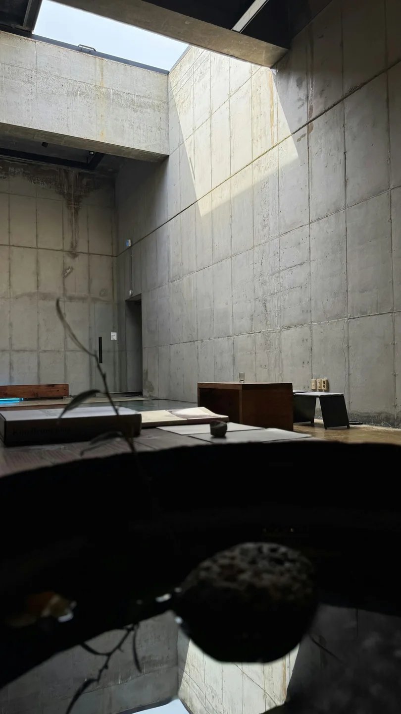
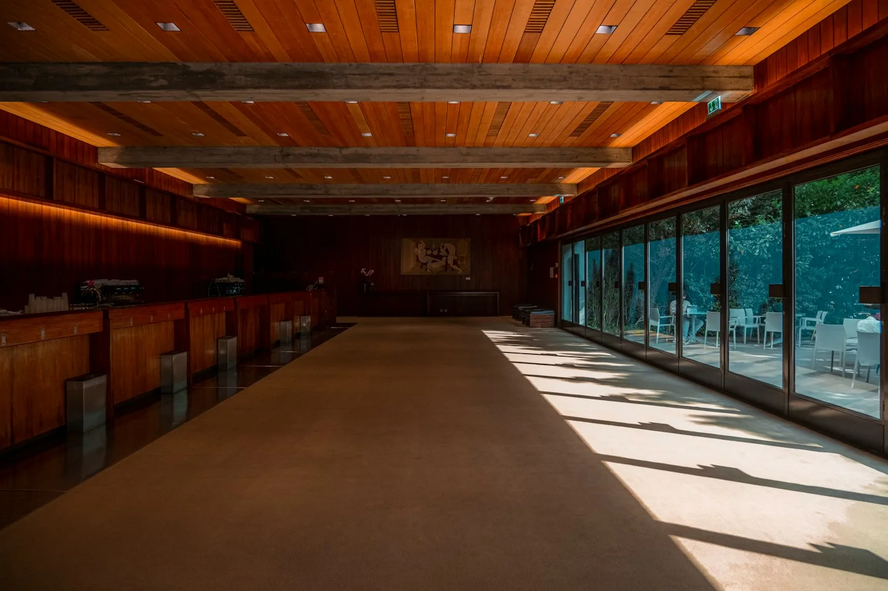

An architecture study
Rooms shaped by light.
A portfolio concept for a small architecture practice. The studies look at how daylight, material and proportion change an everyday room.
Browse the studies
Studies in light and material
Two interiors show what happens when the structure and the light do the work.

Concrete
A high opening draws daylight across an otherwise quiet surface.
Timber
A repeated ceiling pattern gives a broad room a human scale.
Glass
A low window sill keeps the garden in view from a seated position.